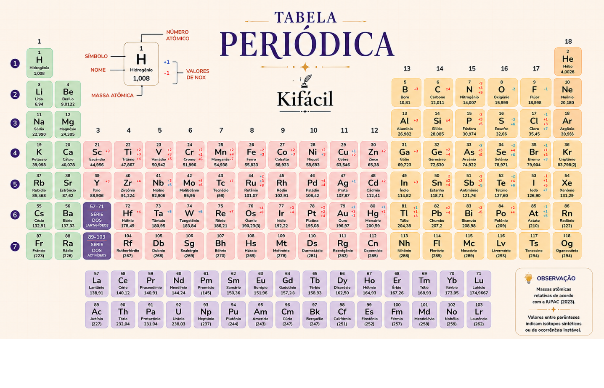
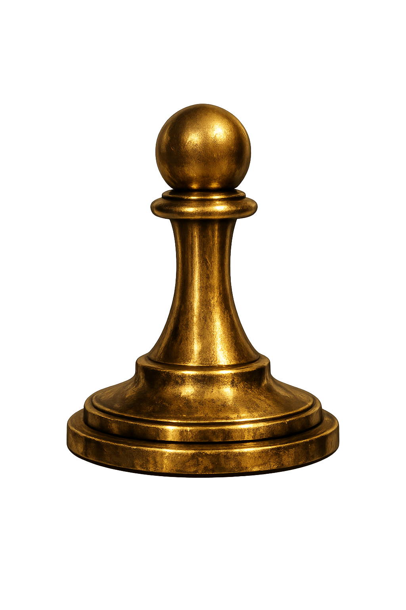

You crossed the Periodic Table following family and period clues, without needing to memorize a single position. The next passage of the Chemistry Tower has been opened.
This site uses cookies to improve your experience. By continuing to browse, you agree to our Privacy Policy.